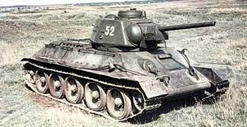
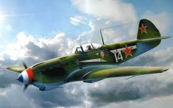

Тут можно узнать все танках и самолетах СССР , годах производства и их ТТХ
Т-34 — советский средний танк периода Великой Отечественной войны, выпускался серийно с 1940 года. В течение 1942—1947 годов — основной танк РККА и ВС СССР. Являлся основным танком РККА до первой половины 1944 года, до поступления в войска его модификации Т-34-85. Самый массовый средний танк Великой Отечественной Войны.

Як-9 — советский одномоторный самолёт истребитель-бомбардировщик Великой Отечественной войны. Являлся самым массовым советским истребителем Великой Отечественной войны. Всего было построено 16 769 самолётов.
